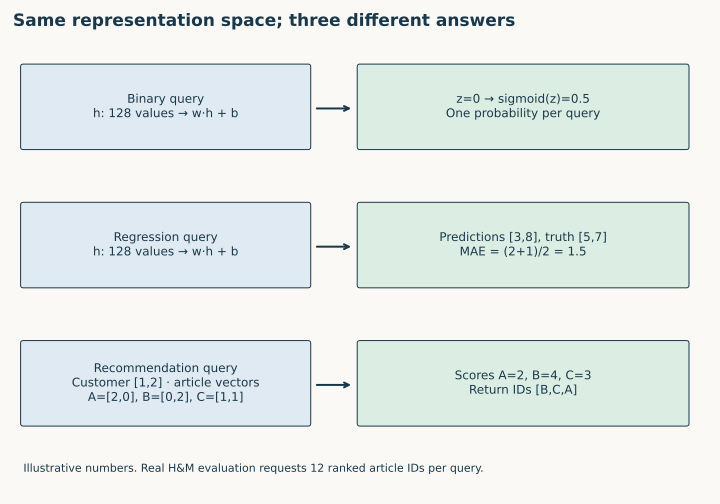
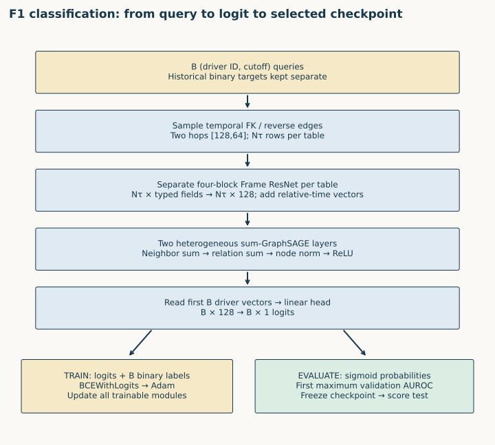
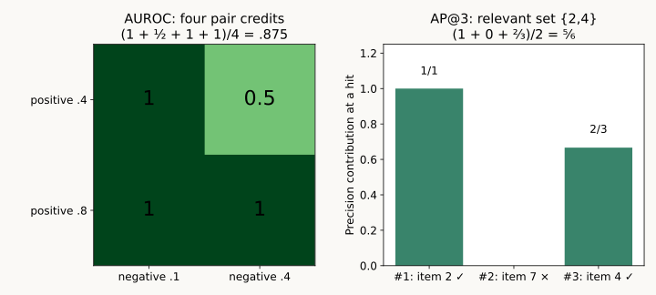
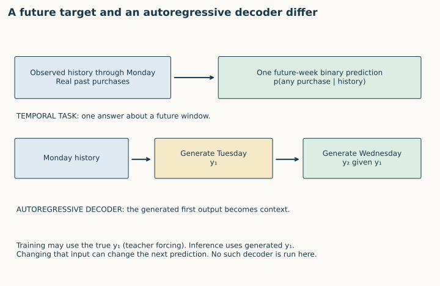
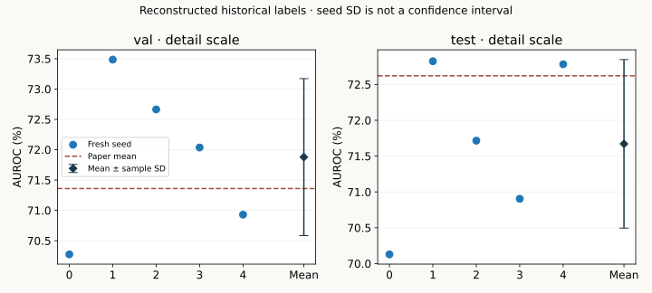

Year 4 · Quarter 1 · Lesson 128
Task taxonomy: choose the target, head, loss and metric
The win. Given a prediction request over a database, specify its query, future target, model output, training loss, evaluation metric and temporal split. Then audit a complete classification reproduction whose task name stayed the same while its labels changed.
Student lab · Executed solution · Reference · Reproduction contract
1 · The question determines the output¶
Lesson 124 separated database entities from supervised task rows. A driver can be queried many times: (driver, cutoff) identifies the question. Lesson 127 trained a scalar regression model on those questions. Now ask what changes when the question asks whether an event happens, or which items a customer will buy.
Recall before reading. Why can two rows with the same driver ID have different labels? Why must a context node not receive the seed's supervised loss? Can a model with excellent test performance still have an invalid temporal split?
In plain terms. A task contract says what an answer means before the model produces it. Its six parts are the query, target, output shape, training objective, evaluation rule and information cutoff. The loss is the quantity optimized during training. The metric is the quantity used to assess predictions; they need not be the same function.
Read RelBench v1 §5 and Tables 2, 6–8, then the pinned EntityTask, RecommendationTask, and task-type enum. The paper distinguishes entity classification, entity regression and recommendation. The API also includes multiclass and multilabel classification. These are output contracts; time is another dimension.
Bridge to the mission. Comparing relational learning with manual features is only meaningful when both methods answer the same question and are scored by the same rule. A task name alone does not establish that agreement.
2 · One database, different mathematical answers¶
A head maps the learned representation to the required prediction. Let B mean the number of queries in a batch, d the embedding width, and C the number of candidate items. A logit is an unrestricted real score; the sigmoid function 1/(1+exp(-z)) converts it to a number between zero and one.
| Real task | Query and future target | Head and output | Released training objective | Selection metric |
|---|---|---|---|---|
F1 driver-dnf |
Driver at t; binary label over (t, t+30 days], with historical polarity audited below | One logit per query, B×1; sigmoid at evaluation | Binary cross-entropy with logits | AUROC, higher |
F1 driver-position |
Driver at t; mean finishing position over (t, t+60 days] | One scalar per query, B×1 | Mean absolute error / L1 | MAE, lower |
H&M user-item-purchase |
Customer at t; set of articles bought over the next 7 days | Scores for candidate articles; evaluator receives B×12 ranked article IDs | Pairwise BPR in the pinned two-tower example | MAP@12, higher |
Sources: pinned F1 tasks, H&M task, node trainer, link trainer. These are specific baseline choices, not laws requiring every classifier or recommender to use the same loss.


Worked example: classification. A driver embedding h has 128 entries. A linear head computes z = w·h + b, one number. For z=0, the predicted probability is 0.5. Binary cross-entropy is −y log(p) − (1−y) log(1−p). If the true label y is 1, increasing p reduces the loss. BCEWithLogitsLoss computes this stably from z: do not apply sigmoid first and then feed the result to that function.
Worked example: regression. Predictions [3, 8] and targets [5, 7] have absolute errors [2, 1]. MAE is (2+1)/2 = 1.5 finishing-position units. The head must retain numerical magnitude. Replacing those outputs with binary decisions destroys the information the metric needs. The released F1 regression evaluation clips outputs to training-label percentiles; the classification path has no such clipping.
Worked example: recommendation. A customer vector [1,2] scores article vectors [2,0], [0,2], [1,1] by dot product: scores [2,4,3]. The ranking is article B, then C, then A. The evaluator needs the article IDs in that order. Returning those three floating-point scores instead of IDs violates its input contract.
The two-tower example uses the same encoder parameters for source and destination representations, with table-specific encoders inside the model. BPR means Bayesian Personalized Ranking: prefer an observed positive destination over a sampled negative. With positive score 4 and negative score 2, the loss is log(1+exp(2−4)) ≈ 0.1269. Negative sampling defines this training comparison; full-candidate ranking defines the evaluation comparison. A sampled binary AUROC is not automatically a recommendation MAP result.
Check. Which part changes when regression becomes binary classification? The number of output columns can stay one. Its meaning, loss, evaluation transform and checkpoint-selection direction change.
3 · Follow the classification forward pass¶
The selected experiment keeps the relational encoder from Lessons 117 and 127. It changes the target contract and training/evaluation path. The following architecture is the actual classification lane, not the illustrative two-dimensional recommendation example.


Diagram trace. Locate the binary head and sigmoid. What changes from regression even though the output still has one column? On a narrow screen, scroll the figure sideways.
Start with the question. A batch contains B (driverId, seed time) pairs. The seed time is the prediction cutoff. Two queries for the same driver remain separate; the sampler builds disjoint context copies for them.
Build the input. Foreign keys and reverse edges connect the nine F1 tables. Two-hop temporal sampling uses fanouts [128,64]: these bound sampled neighbors per relation at successive hops. Every dated row must be no later than its own root query time. Targets remain separate from input features.
Encode rows. Each table has its own four-block PyTorch Frame ResNet. Numerical, categorical, time and text fields become row vectors with 128 coordinates. A relative-time encoder turns seed time − row time into an additional vector, measured in days before encoding.
Pass messages. Two heterogeneous GraphSAGE layers sum neighbors within each relation, sum relation outputs, then apply node-wise normalization and ReLU. A ReLU replaces negative coordinates with zero. Nτ denotes the number of sampled rows of table type τ; these context counts can greatly exceed B.
Read the answer. Only the first B driver vectors enter the scalar head. The B labels are attached by task-row identity, not by driver ID alone. Adam updates the encoders, message-passing layers and head using mean binary cross-entropy. Evaluation applies sigmoid and selects the first epoch with maximum validation AUROC. The test set never chooses the epoch. Visible shared model · Visible classification trainer.
for epoch in range(1,epochs+1):
model.train();loss_sum=0.;count=0
for batch in loaders['train']:
batch=batch.to(device);optimizer.zero_grad()
pred=model(batch,task.entity_table).view(-1)
loss=torch.nn.functional.binary_cross_entropy_with_logits(pred.float(),batch[task.entity_table].y.float())
loss.backward();optimizer.step()
count+=len(pred);loss_sum+=float(loss.detach())*len(pred)
assert count==11411
val,_,_=predict(loaders['val'])
score=binary_auc(tables['val'].df[task.target_col].to_numpy(),val)
trace.append(dict(epoch=epoch,train_bce=loss_sum/count,val_auc=score,train_queries=count))
if score>best:best=score;state=copy.deepcopy(model.state_dict());selected=epoch
print(json.dumps(trace[-1]),flush=True)
Scope check. The released preprocessing fits feature statistics using the database through the test cutoff. This is not train-only preprocessing. Actual arrival times, mutable-feature histories and creation dates for undated rows are unavailable. The reproduction preserves and discloses these limits; the batch audit checks the timestamps and graph identities that do exist.
4 · Compute the metric before trusting its name¶
AUROC is a comparison between classes¶
In plain terms. AUROC measures how often a randomly chosen positive gets a higher score than a randomly chosen negative. A tied pair receives half credit. It measures ranking, not the accuracy of a 0.5 decision threshold and not probability calibration.
Worked example. Labels [0,1,0,1] have scores [0.1,0.4,0.4,0.8]. The positive scores are 0.4 and 0.8. Against negative scores 0.1 and 0.4, the four pair credits are [1,0.5,1,1]. AUROC is 3.5/4 = 0.875. Both classes are required. With only one class, this lesson rejects the metric as undefined.


Predict before changing the scores. Will changing the decision threshold alter this AUROC? Will swapping two article ranks alter MAP? Try the controls; the original result remains visible.
MAP preserves each recommendation query¶
A relevant item is an article in that query's future target set. Precision at rank r is the fraction of the first r items that are relevant. For each query, average precision at k adds precision only at relevant ranks, then divides by min(k, number of relevant items). MAP is the mean of these per-query values. The pinned RelBench implementation excludes queries with zero relevant destinations. Metric implementation.
Worked example. Relevant items are {2,4} and the top-three list is [2,7,4]. Precision at the relevant ranks is 1 and 2/3, so AP@3 is (1+2/3)/2 = 5/6. A second query with relevant set {9} and ranking [8,9,3] has AP@3 = 1/2. The macro mean is (5/6+1/2)/2 = 2/3. “Macro” means each eligible query gets equal weight. Flattening all source–destination pairs instead computes a different quantity.
A duplicate item cannot legitimately occupy two recommendation slots. The lab rejects duplicates before scoring. It also checks list length and preserves candidate IDs. The released evaluator assumes valid recommendations; a wrapper should enforce that contract.
Where does Hits@k fit? “At least one correct item in the first k” is a useful hit-rate convention. With multiple true destinations it differs from recall@k, which divides the number retrieved by the number relevant. State the convention. H&M's pinned primary comparison uses MAP@12; do not relabel a hit rate or sampled-negative score as that benchmark result.
5 · Future prediction does not imply autoregression¶
Temporal prediction means asking at time t about a target after t, using only information allowed at t. All three task families above can be temporal. Their heads can differ while they share a database's chronological train/validation/test boundaries.
Autoregression is a factorization: later output predictions condition on earlier output values. A sequence distribution can be written p(y1,y2|history) = p(y1|history) × p(y2|history,y1). At generation time the first predicted output can become input to the next step. In teacher forcing, training supplies the true earlier output; deployment may instead supply a generated one. This can change the input distribution and allow errors to accumulate. Bengio et al., Scheduled Sampling, §1.


Worked contrast. At Monday's cutoff, predict whether a customer buys anything in the following week. That is one future binary target. An autoregressive sequence model might instead generate Tuesday's event, append that generated event to its context, then generate Wednesday's event. Merely using last week's observed purchases as features is not evidence of an autoregressive decoder.
The pinned RelBench TaskType enum has no AUTOREGRESSIVE entry. The curriculum shorthand “entity / link / autoregressive” mixes different axes. This lesson uses entity versus recommendation for the output contract, temporal for information availability, and autoregressive for a separately explained decoding mechanism. No autoregressive benchmark run is claimed here.
Split discipline. For F1, validation begins 2005-01-01 and test begins 2010-01-01. A label must be mature before fitting: its complete future window must have elapsed. The released task generator places training queries so their horizons end by validation. The database cutoff alone is insufficient: each sampled dated node must also obey the particular query cutoff.
6 · A task name survived a label change¶
Predict first. Suppose every binary label is replaced by 1−y. If you keep the old scores unchanged, what happens to AUROC? If you also replace each score by 1−p, what happens? Explain before checking: reversing only labels gives 1−AUROC; reversing both preserves AUROC, including half-credit ties. Preserved AUROC does not prove preserved label meaning. This identity assumes the transformation preserves ordering and ties; finite-precision rounding can create new ties. The notebook promotes stored float32 scores to float64 before subtracting them from one.
The initial pilot rejected the current driver-dnf.zip because its hash differed from the pinned package registry. Inspection found an upstream label-flip commit. The historical task's CASE expression returns one when no future result has statusId != 1. The later definition returns one when any such result exists. Do not interpret the historical positive probability as the literal probability of not finishing.
| Split | Queries | Paper/historical positives | Current archive positives |
|---|---|---|---|
| Train | 11,411 | 1,365 | 10,046 |
| Validation | 566 | 125 | 441 |
| Test | 702 | 207 | 495 |
The reproduction reconstructs historical labels using 1−current_label. This is supported by the pinned pre-flip SQL, an independent full raw-event audit and a complete task-key/label comparison against that SQL. It is not a guess based on a matching class count. Historical source · Independent label audit · Original SQL comparison.
Scope check. Original historical archive bytes and row order remain unavailable. The experiment uses the current archive's query order with reconstructed historical labels and records that deviation. The task SQL also conditions on future participation and has no upper cutoff in its recent-driver eligibility subquery. A past-only 365-day audit finds 1,022/27/26 train/validation/test queries with no observed prior-year result. These are descriptive audit counts, not a silently changed experiment population.
Why this belongs in taxonomy. A name, a binary dtype and a scalar head do not fully specify the task. The target event and its polarity must be explicit. This is also why Lesson 129's planned manual-feature comparison must share the exact same labels and query population.
7 · Full selected experiment and what it establishes¶
The target is RelBench paper v1 Table 6, F1 driver-dnf RDL, five runs: validation AUROC 71.36 ±1.54 and test 72.62 ±0.27, in percentage points. The lesson predeclares a descriptive tolerance of 2 percentage points on each mean. The figure reports sample seed standard deviation; it is not a confidence interval or equivalence test.
The experiment trains all 11,411 task rows for ten epochs per seed. Configuration: width128, two sum-GraphSAGE layers, fanouts [128,64], batch512, Adam learning rate0.005, uniform temporal sampling, seeds0–4. Each run selects by validation only and saves final query IDs, times, historical labels, probabilities, checkpoint hash and every epoch's trace. All final predictions are checked against the original model on the same sampled batches.
Author execution: COMPLETE selected experiment with reconstructed historical labels.
| Split | Fresh mean AUROC (%) | Sample SD (pp) | Paper mean (%) | Verdict |
|---|---|---|---|---|
| val | 71.8781 | 1.2939 | 71.36 | CLOSE |
| test | 71.6708 | 1.1760 | 72.62 | CLOSE |
| Seed | Selected epoch | Final validation AUROC (%) | Test AUROC (%) |
|---|---|---|---|
| 0 | 4 | 70.2748 | 70.1288 |
| 1 | 10 | 73.4857 | 72.8239 |
| 2 | 9 | 72.6639 | 71.7152 |
| 3 | 10 | 72.0363 | 70.9042 |
| 4 | 10 | 70.9297 | 72.7819 |
All 6,340 final predictions independently rescored; 605,190 sampled query occurrences audited. Maximum original-model raw-output difference 9.54e-07. Successful pilot plus five fits: USD 0.078022 worker estimate, excluding setup/storage/unitemized overhead. Failed first pilot conservatively reserves another USD 0.812592. Seven of eight one-hour worker reservations consumed. This is not an invoice total. Full evidence.


Keep evidence separate. The numerical lane is a complete selected experiment using reconstructed historical labels. It is not a whole-paper reproduction. Recommendation metrics in this lesson are executable course exercises, not a trained H&M result. The default notebook replays complete author evidence; its explicit training gate performs a new fit only when enabled in the pinned environment. Source parity, a close mean and author execution do not establish historical identity or learner mastery.
8 · Lab and written defense¶
TODO 1 — contract. Implement task_contract: route three kinds of questions to their output, loss, metric and direction. The classification trainer calls this function before fitting. Reject temporal/autoregressive as substitutes for an output type.
TODO 2 — AUROC. Implement positive–negative concordance with half-credit ties. Reject invalid labels, nonfinite predictions, length mismatches and one-class inputs. Then use your function to independently rescore every author prediction.
TODO 3 — MAP. Implement per-query AP@k and macro averaging under the pinned convention. Enforce unique ranked candidates and exclude empty targets. Check against RelBench's metric on randomized examples.
EXIT — submit a three-task contract table, including query identity, exact target meaning, output dimensions, training loss, metric direction, candidate universe where relevant, horizon and chronological split. Attach your implementations and answer:
- Why can regression and classification share a B×1 head shape but require different training and selection logic?
- Why is high sampled-negative AUROC insufficient evidence of high full-candidate MAP@12?
- Why does a future label not imply autoregressive decoding?
- What does the DNF label reconstruction establish, and which historical identities remain unknown?
- What claim do the five runs support about relational learning, and what additional matched manual-feature comparison would you need?
Ask the teaching agent about any unclear formula, trace or reproduction discrepancy. Submit your written defense for feedback; PENDING_WRITTEN_DEFENSE remains the learner status until it is assessed. Tomorrow, reconstruct the three contracts without notes; in one week, recompute the tied-AUROC and two-query MAP examples; in one month, audit an unfamiliar task's label meaning and metric inputs.
Carry this forward. Construct the strong feature-engineered competitor under the same question contract. Continue to Lesson 129.